Direct Qt PNGs; click an image for its original size. Process time includes startup and screenshot delay; it is not a frame-time benchmark.
boxes · light-default
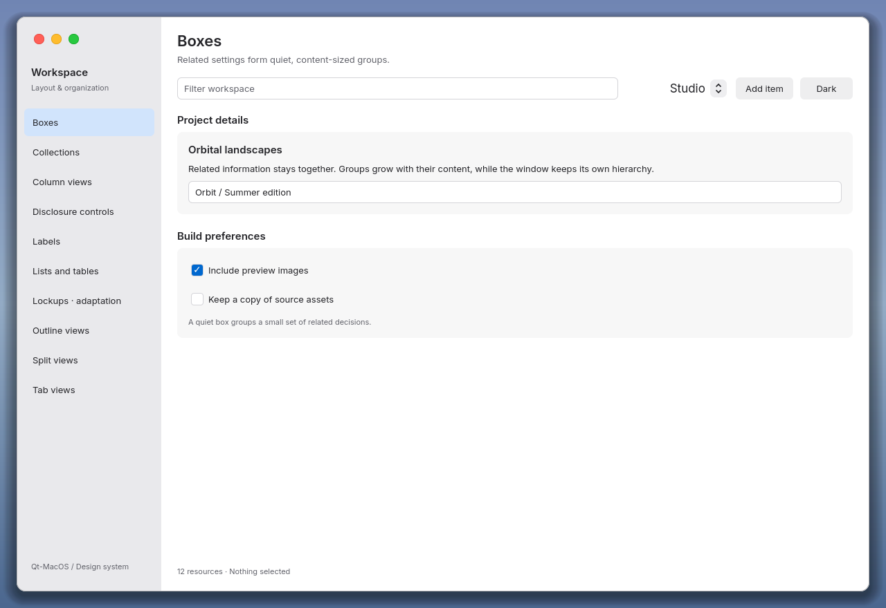
1280 × 880 · 72,186 bytes
Exit: 0 · process: 0.7069 s
Command
/workspace/Qt-MacOS/build/qtmacos-gallery --layout --presentation --page boxes --dataset studio --state default --screenshot /workspace/Qt-MacOS/docs/screenshots/layout/20261108T074438Z-yxe0jxah/boxes-light-default.png
boxes · dark-default
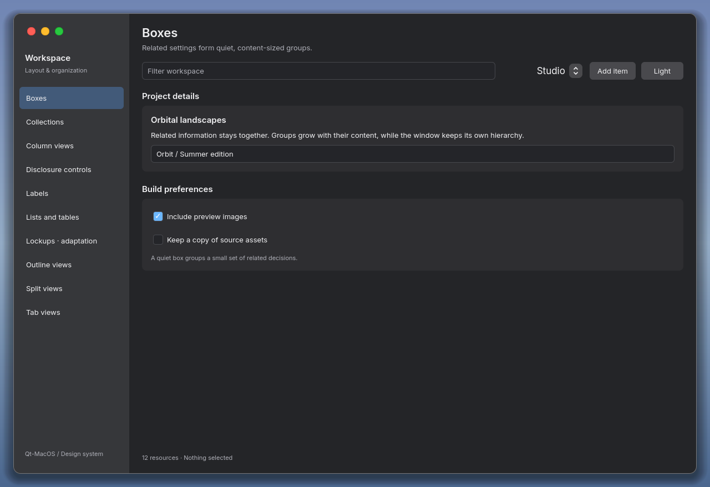
1280 × 880 · 72,628 bytes
Exit: 0 · process: 0.6953 s
Command
/workspace/Qt-MacOS/build/qtmacos-gallery --layout --presentation --page boxes --dataset studio --state default --dark --screenshot /workspace/Qt-MacOS/docs/screenshots/layout/20261108T074438Z-yxe0jxah/boxes-dark-default.png
boxes · light-active
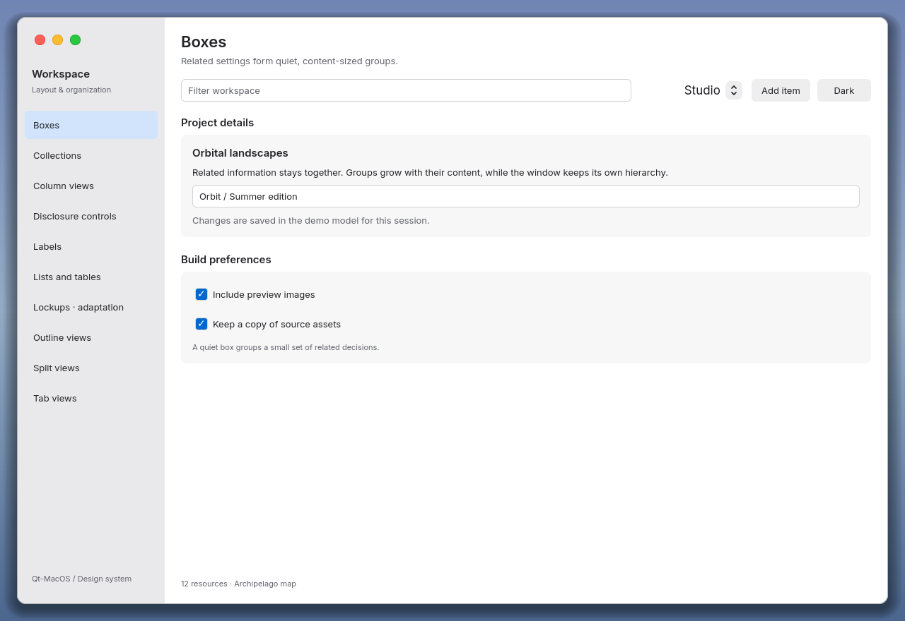
1280 × 880 · 76,576 bytes
Exit: 0 · process: 0.6957 s
Command
/workspace/Qt-MacOS/build/qtmacos-gallery --layout --presentation --page boxes --dataset studio --state active --screenshot /workspace/Qt-MacOS/docs/screenshots/layout/20261108T074438Z-yxe0jxah/boxes-light-active.png
boxes · narrow-library
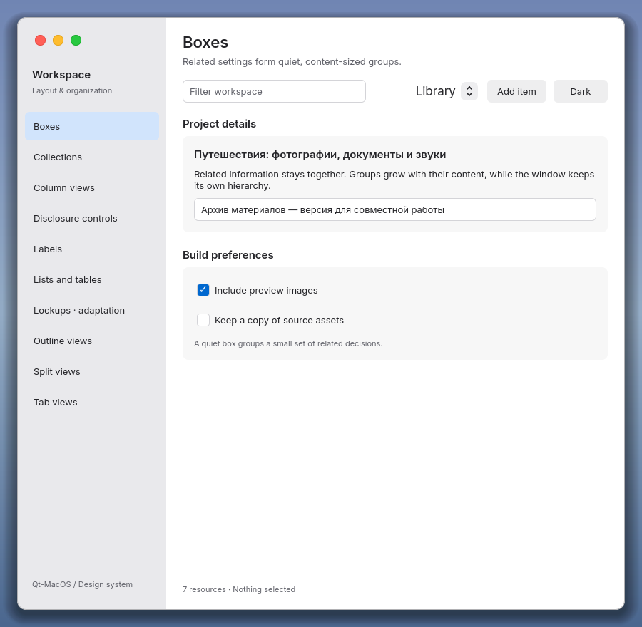
900 × 880 · 74,830 bytes
Exit: 0 · process: 0.6938 s
Command
/workspace/Qt-MacOS/build/qtmacos-gallery --layout --presentation --page boxes --dataset library --state default --narrow --screenshot /workspace/Qt-MacOS/docs/screenshots/layout/20261108T074438Z-yxe0jxah/boxes-narrow-library.png
collections · light-default
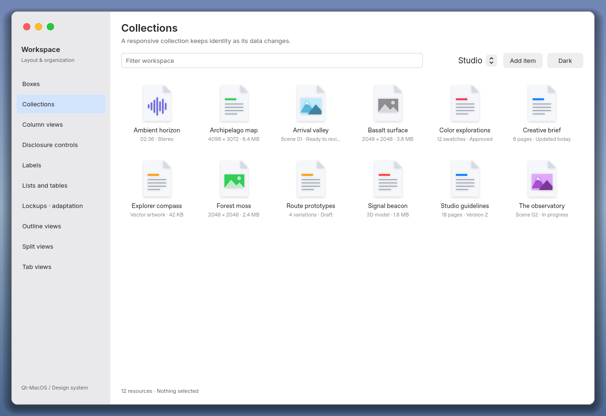
1280 × 880 · 88,452 bytes
Exit: 0 · process: 0.6974 s
Command
/workspace/Qt-MacOS/build/qtmacos-gallery --layout --presentation --page collections --dataset studio --state default --screenshot /workspace/Qt-MacOS/docs/screenshots/layout/20261108T074438Z-yxe0jxah/collections-light-default.png
collections · dark-default
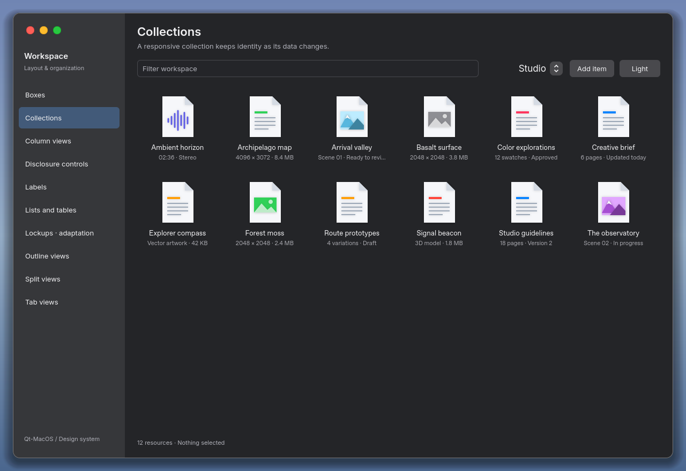
1280 × 880 · 88,611 bytes
Exit: 0 · process: 0.7058 s
Command
/workspace/Qt-MacOS/build/qtmacos-gallery --layout --presentation --page collections --dataset studio --state default --dark --screenshot /workspace/Qt-MacOS/docs/screenshots/layout/20261108T074438Z-yxe0jxah/collections-dark-default.png
collections · light-active
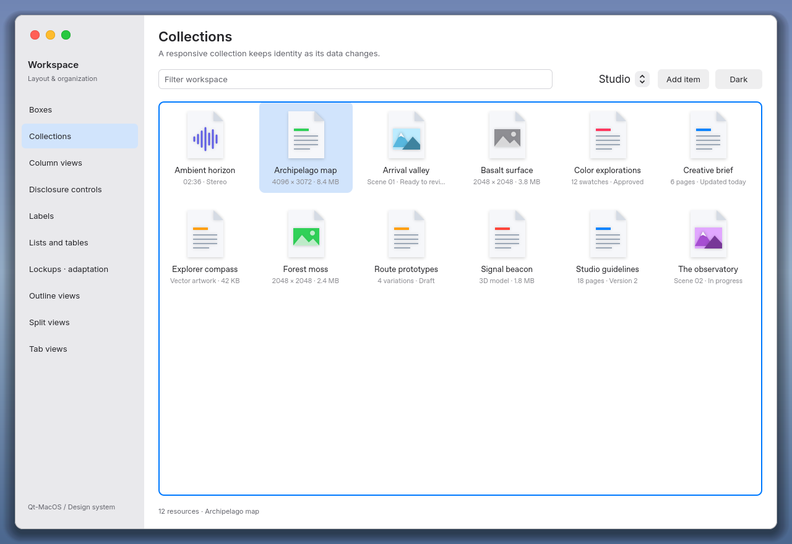
1280 × 880 · 90,940 bytes
Exit: 0 · process: 0.7027 s
Command
/workspace/Qt-MacOS/build/qtmacos-gallery --layout --presentation --page collections --dataset studio --state active --screenshot /workspace/Qt-MacOS/docs/screenshots/layout/20261108T074438Z-yxe0jxah/collections-light-active.png
collections · narrow-library
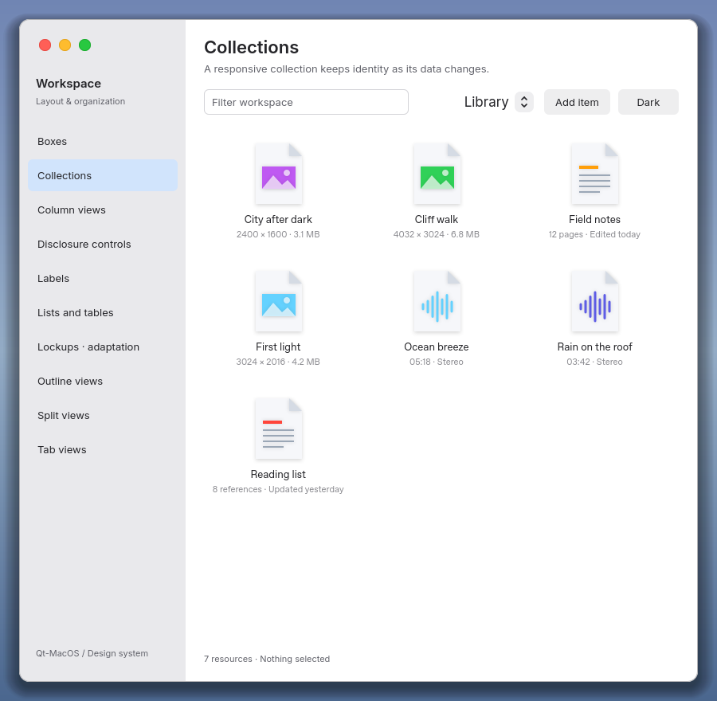
900 × 880 · 73,457 bytes
Exit: 0 · process: 0.6896 s
Command
/workspace/Qt-MacOS/build/qtmacos-gallery --layout --presentation --page collections --dataset library --state default --narrow --screenshot /workspace/Qt-MacOS/docs/screenshots/layout/20261108T074438Z-yxe0jxah/collections-narrow-library.png
columns · light-default
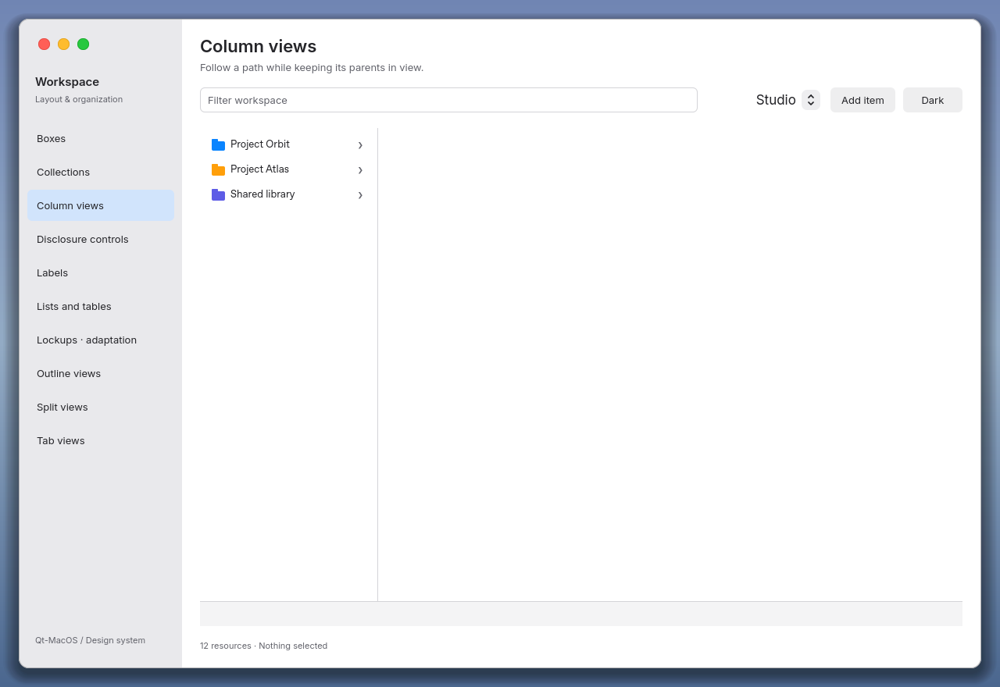
1280 × 880 · 52,956 bytes
Exit: 0 · process: 0.6931 s
Command
/workspace/Qt-MacOS/build/qtmacos-gallery --layout --presentation --page columns --dataset studio --state default --screenshot /workspace/Qt-MacOS/docs/screenshots/layout/20261108T074438Z-yxe0jxah/columns-light-default.png
columns · dark-default
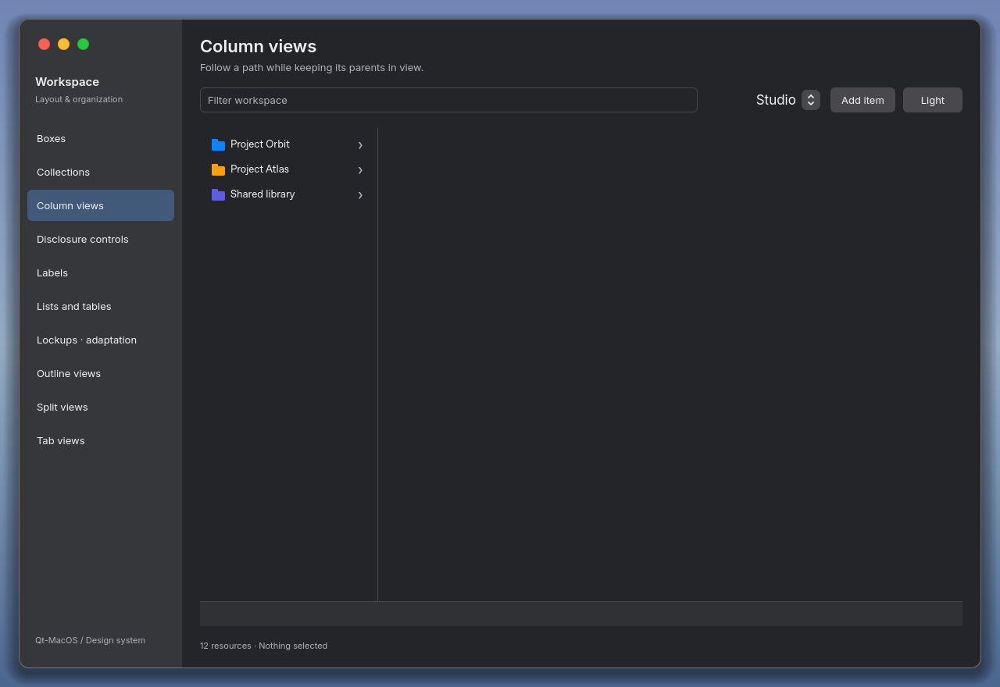
1280 × 880 · 53,182 bytes
Exit: 0 · process: 0.6947 s
Command
/workspace/Qt-MacOS/build/qtmacos-gallery --layout --presentation --page columns --dataset studio --state default --dark --screenshot /workspace/Qt-MacOS/docs/screenshots/layout/20261108T074438Z-yxe0jxah/columns-dark-default.png
columns · light-active
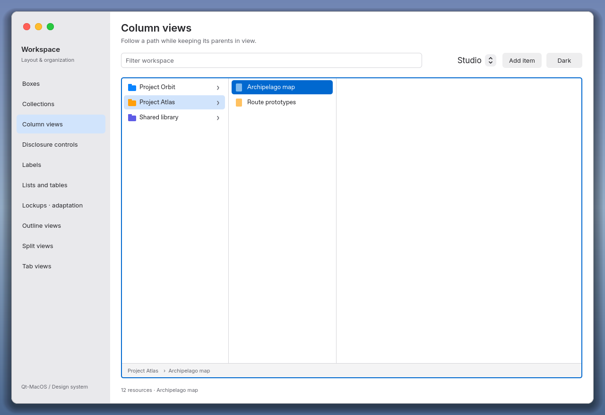
1280 × 880 · 60,047 bytes
Exit: 0 · process: 0.697 s
Command
/workspace/Qt-MacOS/build/qtmacos-gallery --layout --presentation --page columns --dataset studio --state active --screenshot /workspace/Qt-MacOS/docs/screenshots/layout/20261108T074438Z-yxe0jxah/columns-light-active.png
columns · narrow-library
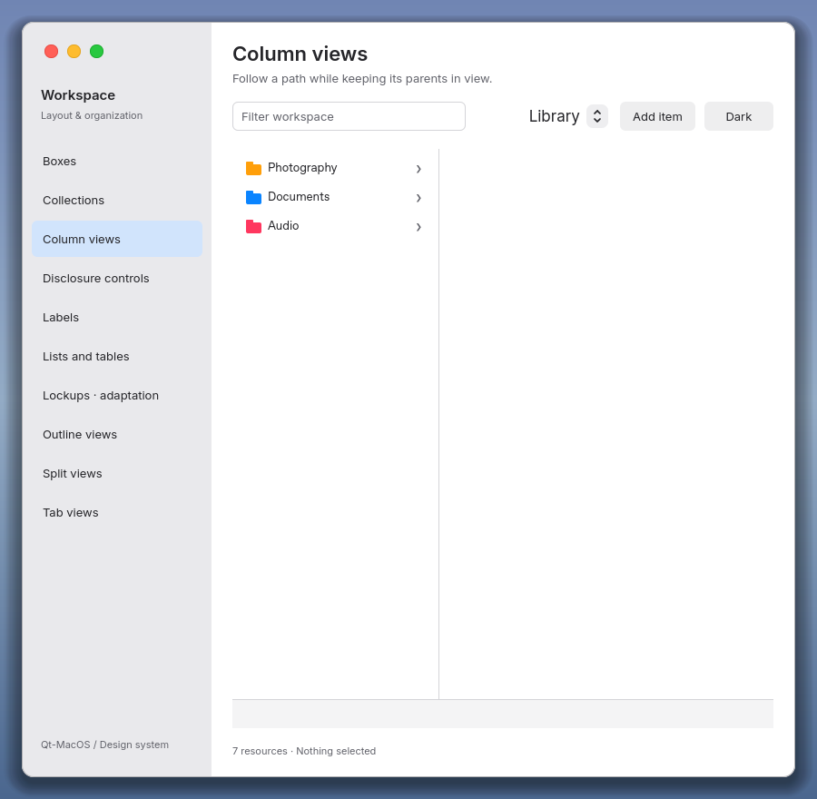
900 × 880 · 49,768 bytes
Exit: 0 · process: 0.6906 s
Command
/workspace/Qt-MacOS/build/qtmacos-gallery --layout --presentation --page columns --dataset library --state default --narrow --screenshot /workspace/Qt-MacOS/docs/screenshots/layout/20261108T074438Z-yxe0jxah/columns-narrow-library.png
disclosure · light-default
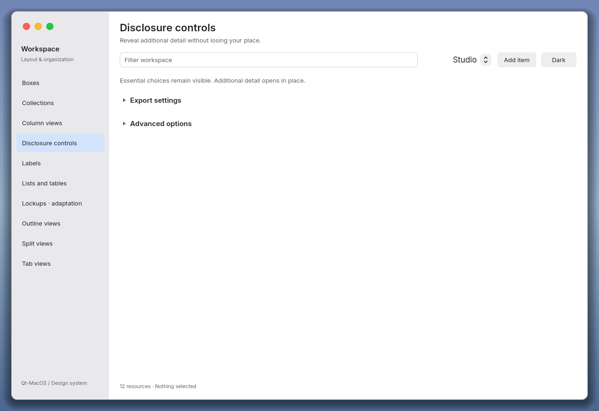
1280 × 880 · 57,456 bytes
Exit: 0 · process: 0.6949 s
Command
/workspace/Qt-MacOS/build/qtmacos-gallery --layout --presentation --page disclosure --dataset studio --state default --screenshot /workspace/Qt-MacOS/docs/screenshots/layout/20261108T074438Z-yxe0jxah/disclosure-light-default.png
disclosure · dark-default
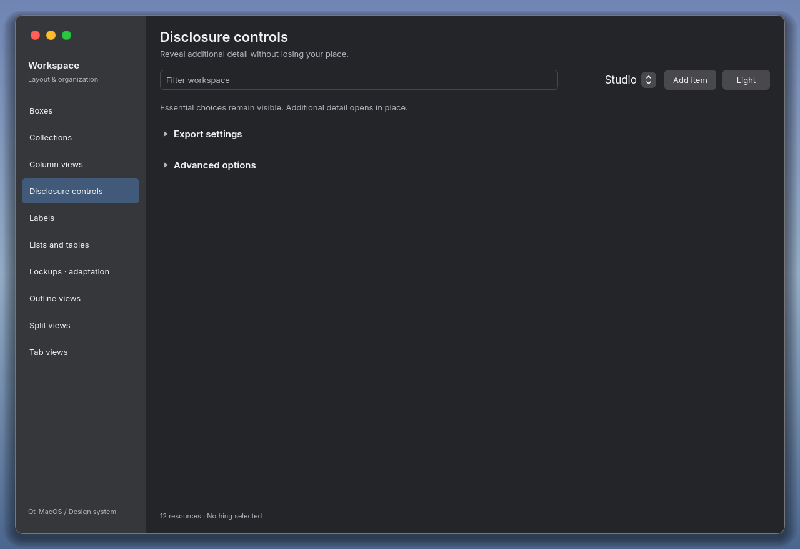
1280 × 880 · 57,710 bytes
Exit: 0 · process: 0.6951 s
Command
/workspace/Qt-MacOS/build/qtmacos-gallery --layout --presentation --page disclosure --dataset studio --state default --dark --screenshot /workspace/Qt-MacOS/docs/screenshots/layout/20261108T074438Z-yxe0jxah/disclosure-dark-default.png
disclosure · light-active
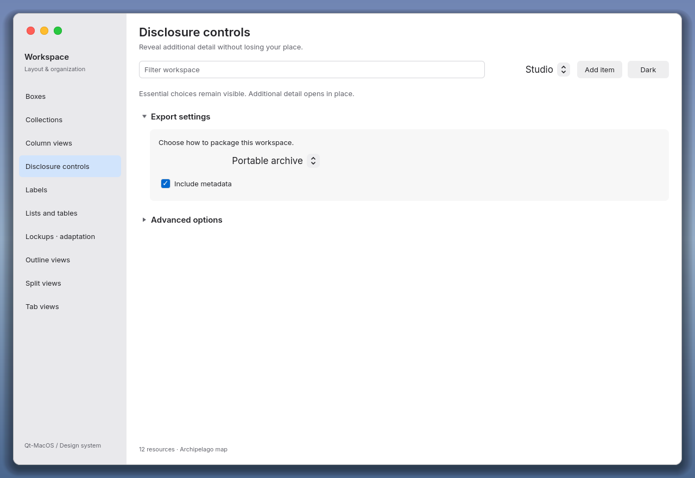
1280 × 880 · 66,803 bytes
Exit: 0 · process: 0.6953 s
Command
/workspace/Qt-MacOS/build/qtmacos-gallery --layout --presentation --page disclosure --dataset studio --state active --screenshot /workspace/Qt-MacOS/docs/screenshots/layout/20261108T074438Z-yxe0jxah/disclosure-light-active.png
disclosure · narrow-library
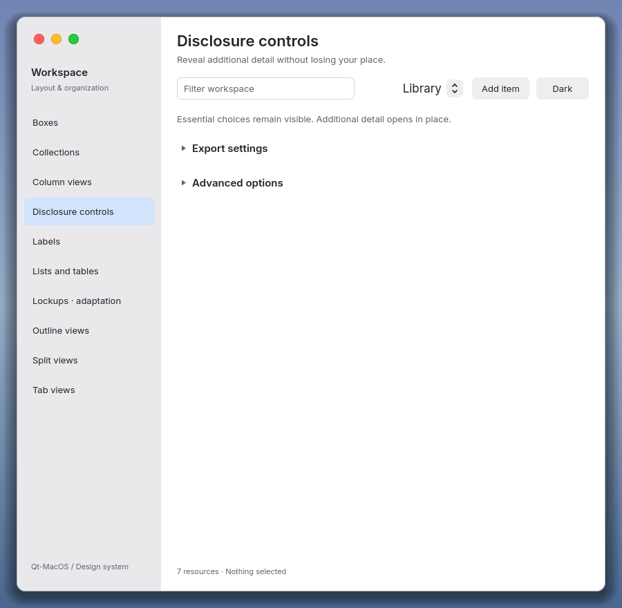
900 × 880 · 55,084 bytes
Exit: 0 · process: 0.6905 s
Command
/workspace/Qt-MacOS/build/qtmacos-gallery --layout --presentation --page disclosure --dataset library --state default --narrow --screenshot /workspace/Qt-MacOS/docs/screenshots/layout/20261108T074438Z-yxe0jxah/disclosure-narrow-library.png
labels · light-default
1280 × 880 · 84,746 bytes
Exit: 0 · process: 0.7054 s
Command
/workspace/Qt-MacOS/build/qtmacos-gallery --layout --presentation --page labels --dataset studio --state default --screenshot /workspace/Qt-MacOS/docs/screenshots/layout/20261108T074438Z-yxe0jxah/labels-light-default.png
labels · dark-default
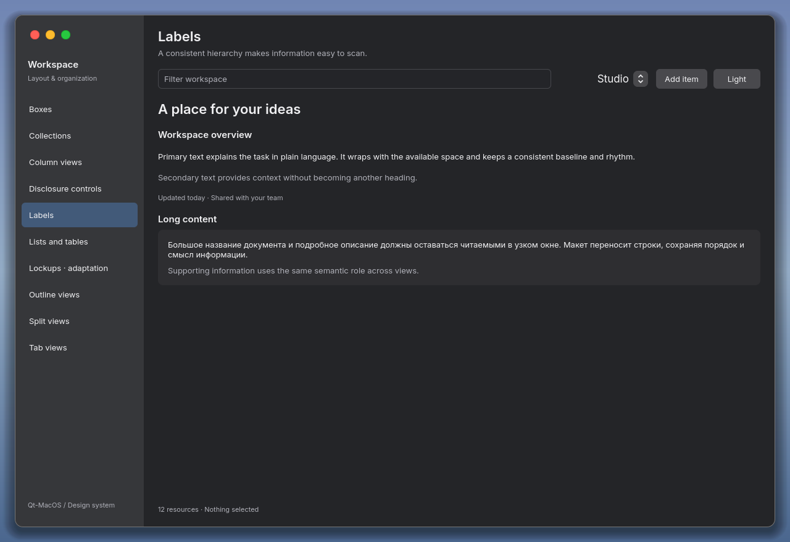
1280 × 880 · 85,086 bytes
Exit: 0 · process: 0.7026 s
Command
/workspace/Qt-MacOS/build/qtmacos-gallery --layout --presentation --page labels --dataset studio --state default --dark --screenshot /workspace/Qt-MacOS/docs/screenshots/layout/20261108T074438Z-yxe0jxah/labels-dark-default.png
labels · light-active
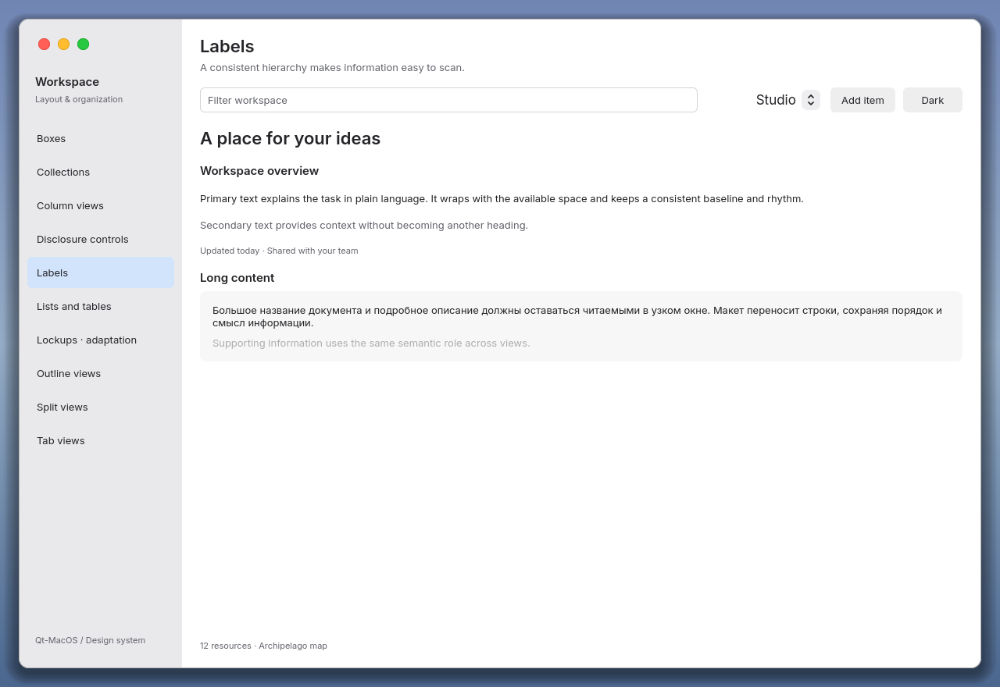
1280 × 880 · 84,396 bytes
Exit: 0 · process: 0.6997 s
Command
/workspace/Qt-MacOS/build/qtmacos-gallery --layout --presentation --page labels --dataset studio --state active --screenshot /workspace/Qt-MacOS/docs/screenshots/layout/20261108T074438Z-yxe0jxah/labels-light-active.png
labels · narrow-library
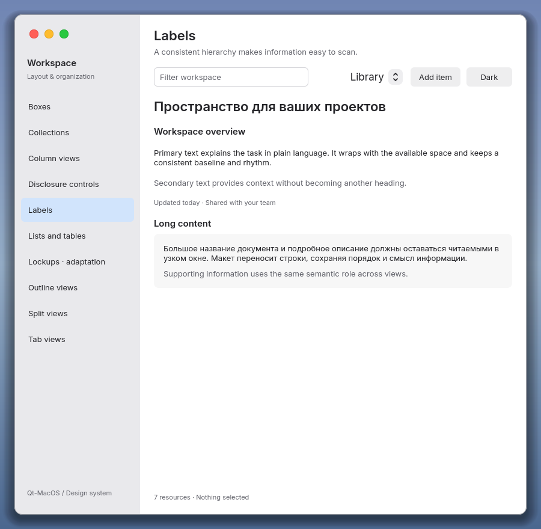
900 × 880 · 85,117 bytes
Exit: 0 · process: 0.6922 s
Command
/workspace/Qt-MacOS/build/qtmacos-gallery --layout --presentation --page labels --dataset library --state default --narrow --screenshot /workspace/Qt-MacOS/docs/screenshots/layout/20261108T074438Z-yxe0jxah/labels-narrow-library.png
lists · light-default
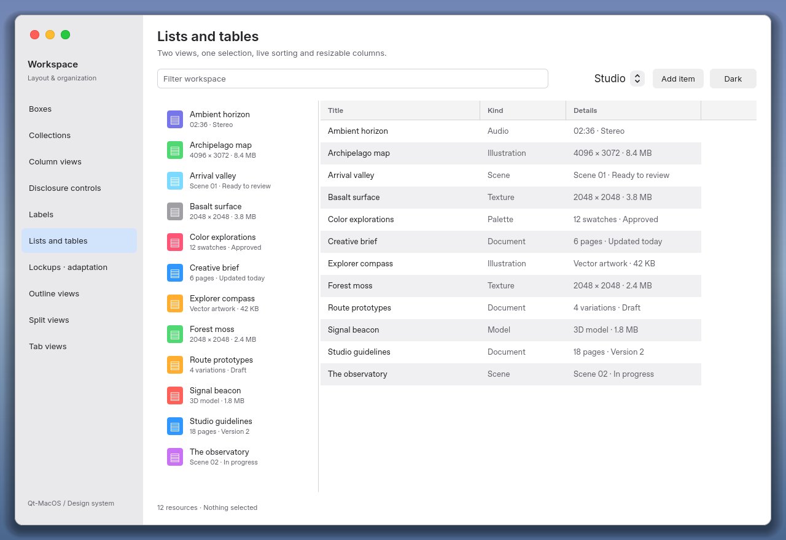
1280 × 880 · 145,662 bytes
Exit: 0 · process: 0.7136 s
Command
/workspace/Qt-MacOS/build/qtmacos-gallery --layout --presentation --page lists --dataset studio --state default --screenshot /workspace/Qt-MacOS/docs/screenshots/layout/20261108T074438Z-yxe0jxah/lists-light-default.png
lists · dark-default
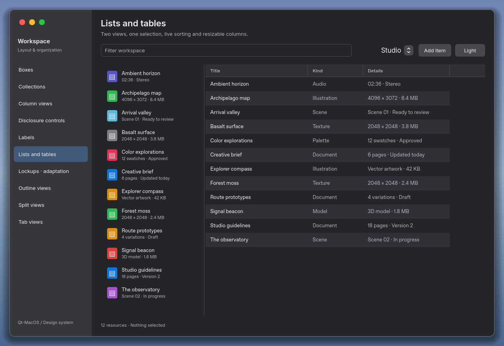
1280 × 880 · 146,639 bytes
Exit: 0 · process: 0.7038 s
Command
/workspace/Qt-MacOS/build/qtmacos-gallery --layout --presentation --page lists --dataset studio --state default --dark --screenshot /workspace/Qt-MacOS/docs/screenshots/layout/20261108T074438Z-yxe0jxah/lists-dark-default.png
lists · light-active
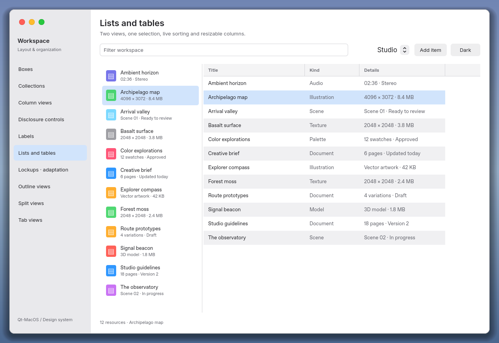
1280 × 880 · 145,817 bytes
Exit: 0 · process: 0.7034 s
Command
/workspace/Qt-MacOS/build/qtmacos-gallery --layout --presentation --page lists --dataset studio --state active --screenshot /workspace/Qt-MacOS/docs/screenshots/layout/20261108T074438Z-yxe0jxah/lists-light-active.png
lists · narrow-library
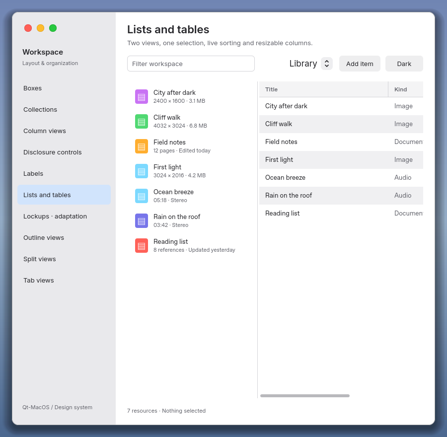
900 × 880 · 83,617 bytes
Exit: 0 · process: 0.6997 s
Command
/workspace/Qt-MacOS/build/qtmacos-gallery --layout --presentation --page lists --dataset library --state default --narrow --screenshot /workspace/Qt-MacOS/docs/screenshots/layout/20261108T074438Z-yxe0jxah/lists-narrow-library.png
lockups · light-default
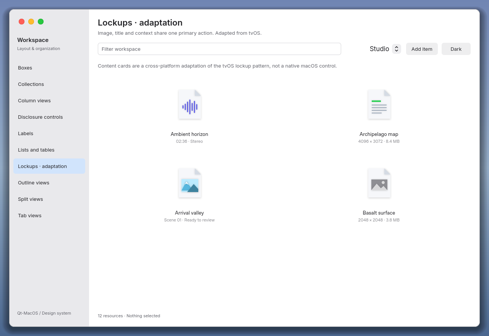
1280 × 880 · 76,778 bytes
Exit: 0 · process: 0.6965 s
Command
/workspace/Qt-MacOS/build/qtmacos-gallery --layout --presentation --page lockups --dataset studio --state default --screenshot /workspace/Qt-MacOS/docs/screenshots/layout/20261108T074438Z-yxe0jxah/lockups-light-default.png
lockups · dark-default
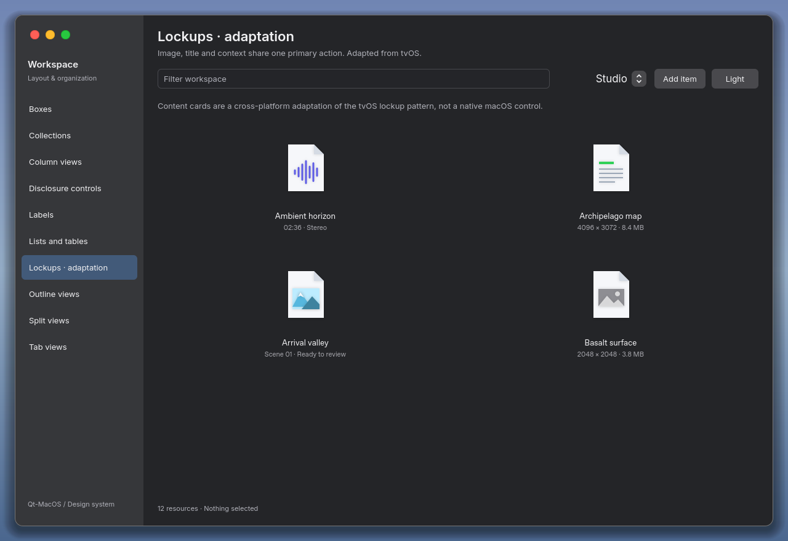
1280 × 880 · 77,179 bytes
Exit: 0 · process: 0.6977 s
Command
/workspace/Qt-MacOS/build/qtmacos-gallery --layout --presentation --page lockups --dataset studio --state default --dark --screenshot /workspace/Qt-MacOS/docs/screenshots/layout/20261108T074438Z-yxe0jxah/lockups-dark-default.png
lockups · light-active
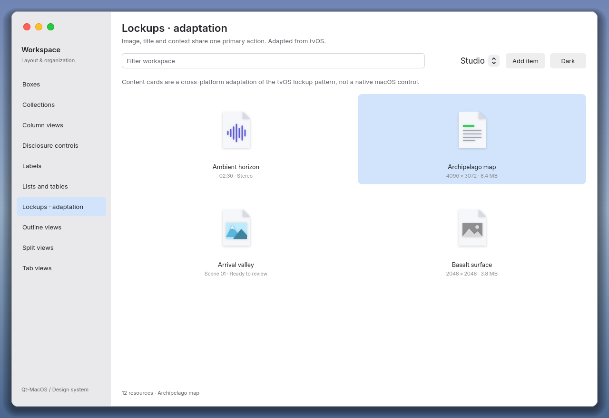
1280 × 880 · 77,893 bytes
Exit: 0 · process: 0.7014 s
Command
/workspace/Qt-MacOS/build/qtmacos-gallery --layout --presentation --page lockups --dataset studio --state active --screenshot /workspace/Qt-MacOS/docs/screenshots/layout/20261108T074438Z-yxe0jxah/lockups-light-active.png
lockups · narrow-library
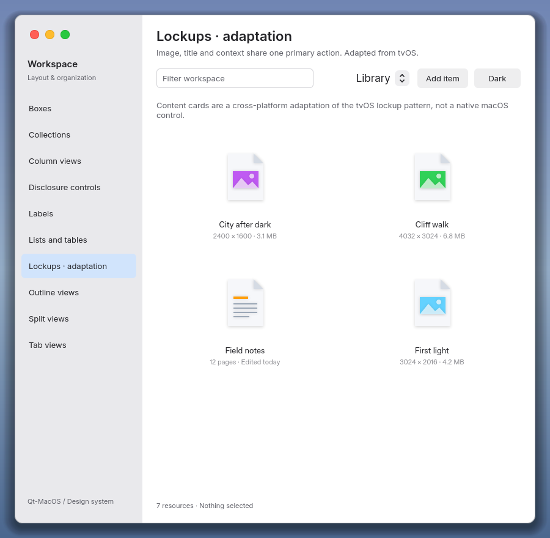
900 × 880 · 72,499 bytes
Exit: 0 · process: 0.6922 s
Command
/workspace/Qt-MacOS/build/qtmacos-gallery --layout --presentation --page lockups --dataset library --state default --narrow --screenshot /workspace/Qt-MacOS/docs/screenshots/layout/20261108T074438Z-yxe0jxah/lockups-narrow-library.png
outline · light-default
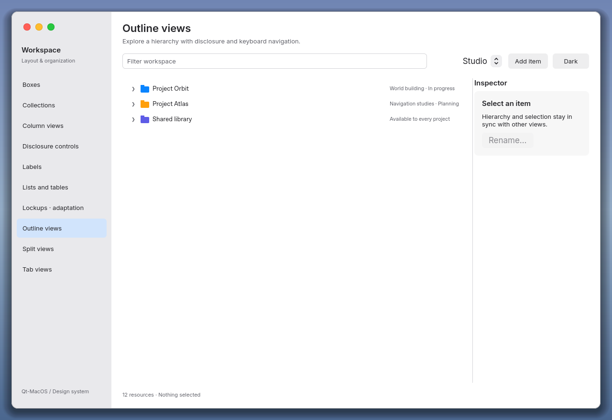
1280 × 880 · 69,783 bytes
Exit: 0 · process: 0.6936 s
Command
/workspace/Qt-MacOS/build/qtmacos-gallery --layout --presentation --page outline --dataset studio --state default --screenshot /workspace/Qt-MacOS/docs/screenshots/layout/20261108T074438Z-yxe0jxah/outline-light-default.png
outline · dark-default
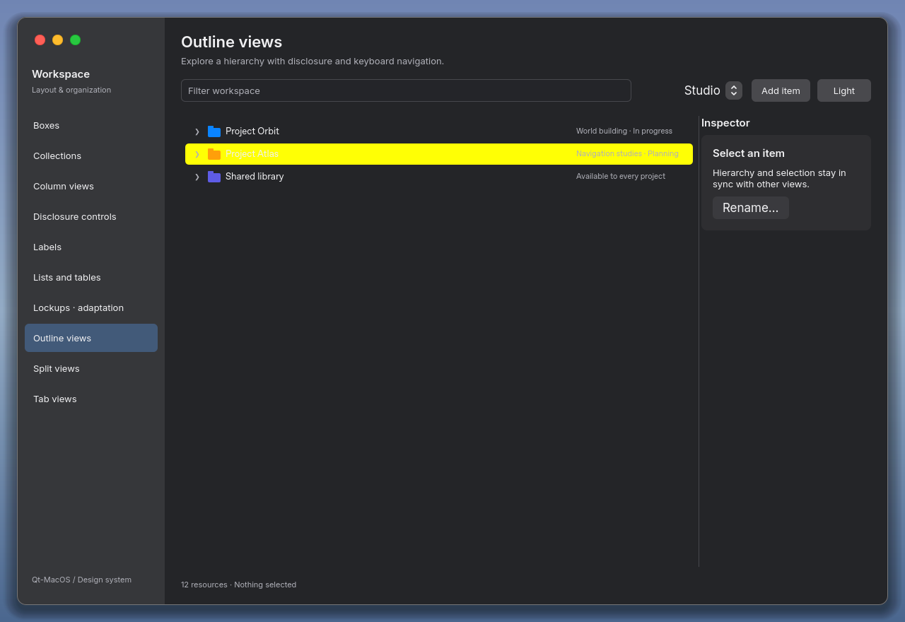
1280 × 880 · 70,354 bytes
Exit: 0 · process: 0.6948 s
Command
/workspace/Qt-MacOS/build/qtmacos-gallery --layout --presentation --page outline --dataset studio --state default --dark --screenshot /workspace/Qt-MacOS/docs/screenshots/layout/20261108T074438Z-yxe0jxah/outline-dark-default.png
outline · light-active
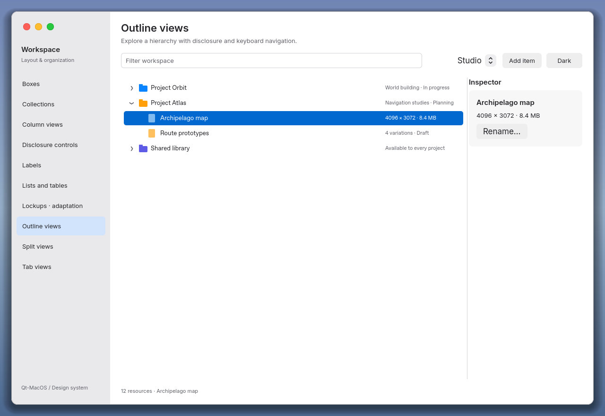
1280 × 880 · 75,081 bytes
Exit: 0 · process: 0.6959 s
Command
/workspace/Qt-MacOS/build/qtmacos-gallery --layout --presentation --page outline --dataset studio --state active --screenshot /workspace/Qt-MacOS/docs/screenshots/layout/20261108T074438Z-yxe0jxah/outline-light-active.png
outline · narrow-library
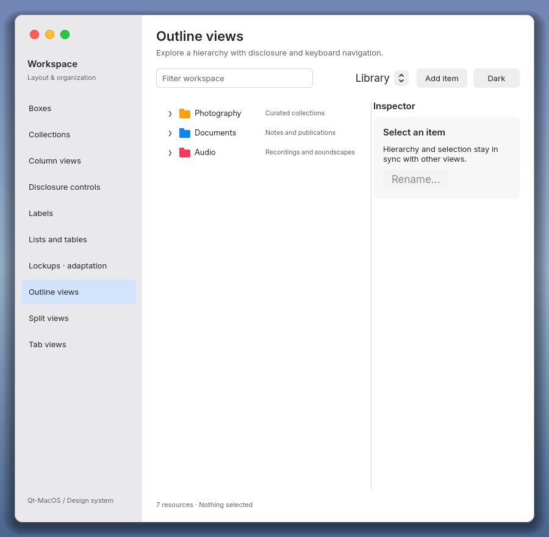
900 × 880 · 65,952 bytes
Exit: 0 · process: 0.687 s
Command
/workspace/Qt-MacOS/build/qtmacos-gallery --layout --presentation --page outline --dataset library --state default --narrow --screenshot /workspace/Qt-MacOS/docs/screenshots/layout/20261108T074438Z-yxe0jxah/outline-narrow-library.png
split · light-default
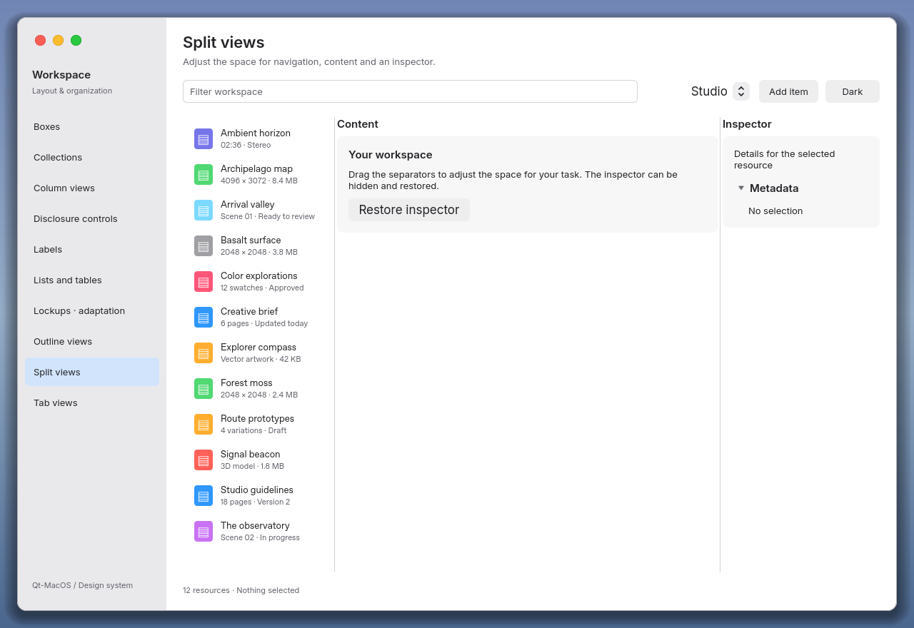
1280 × 880 · 112,576 bytes
Exit: 0 · process: 0.7006 s
Command
/workspace/Qt-MacOS/build/qtmacos-gallery --layout --presentation --page split --dataset studio --state default --screenshot /workspace/Qt-MacOS/docs/screenshots/layout/20261108T074438Z-yxe0jxah/split-light-default.png
split · dark-default
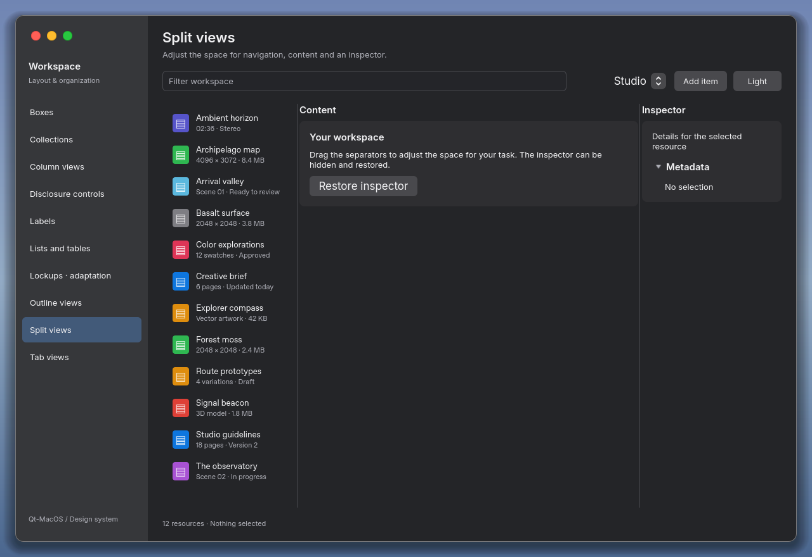
1280 × 880 · 113,627 bytes
Exit: 0 · process: 0.7006 s
Command
/workspace/Qt-MacOS/build/qtmacos-gallery --layout --presentation --page split --dataset studio --state default --dark --screenshot /workspace/Qt-MacOS/docs/screenshots/layout/20261108T074438Z-yxe0jxah/split-dark-default.png
split · light-active
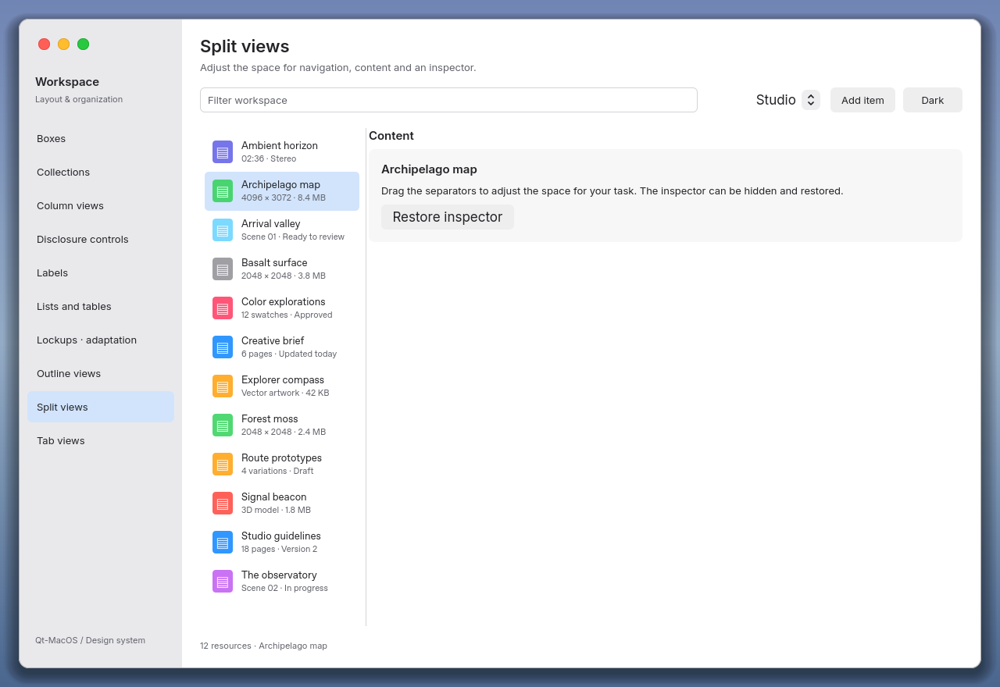
1280 × 880 · 105,623 bytes
Exit: 0 · process: 0.6976 s
Command
/workspace/Qt-MacOS/build/qtmacos-gallery --layout --presentation --page split --dataset studio --state active --screenshot /workspace/Qt-MacOS/docs/screenshots/layout/20261108T074438Z-yxe0jxah/split-light-active.png
split · narrow-library
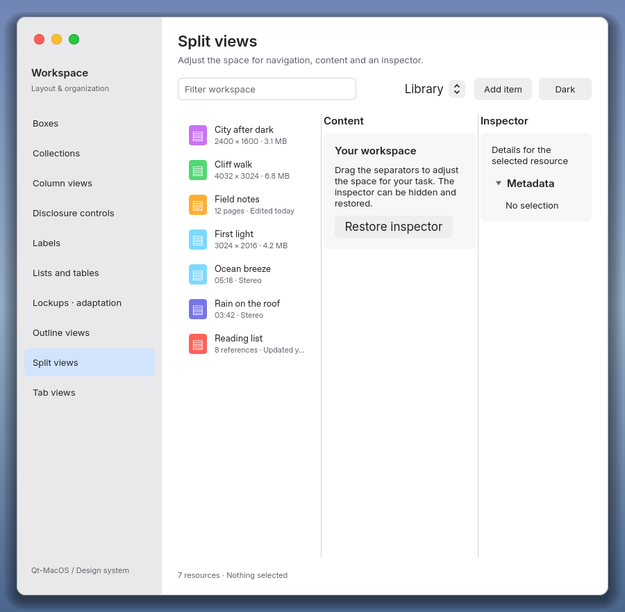
900 × 880 · 88,983 bytes
Exit: 0 · process: 0.693 s
Command
/workspace/Qt-MacOS/build/qtmacos-gallery --layout --presentation --page split --dataset library --state default --narrow --screenshot /workspace/Qt-MacOS/docs/screenshots/layout/20261108T074438Z-yxe0jxah/split-narrow-library.png
tabs · light-default
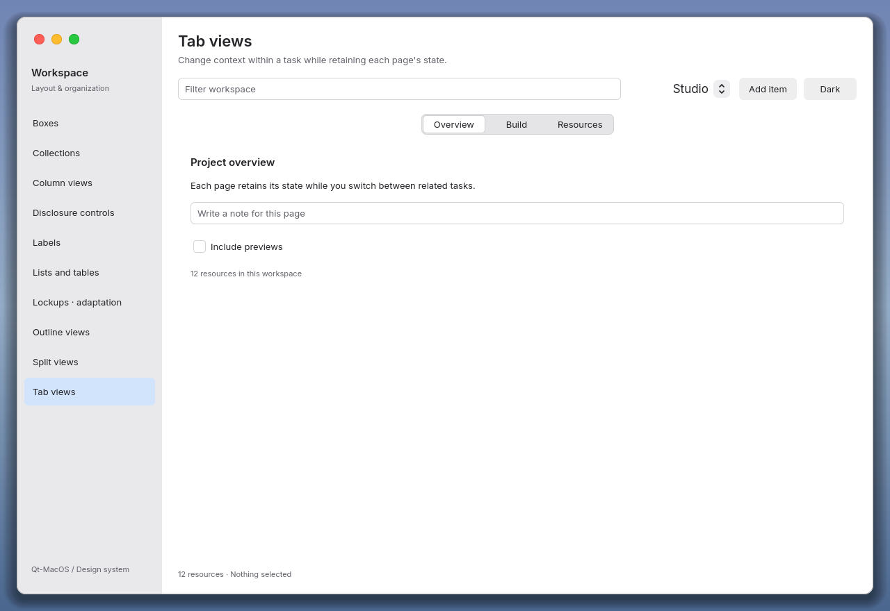
1280 × 880 · 65,835 bytes
Exit: 0 · process: 0.7013 s
Command
/workspace/Qt-MacOS/build/qtmacos-gallery --layout --presentation --page tabs --dataset studio --state default --screenshot /workspace/Qt-MacOS/docs/screenshots/layout/20261108T074438Z-yxe0jxah/tabs-light-default.png
tabs · dark-default
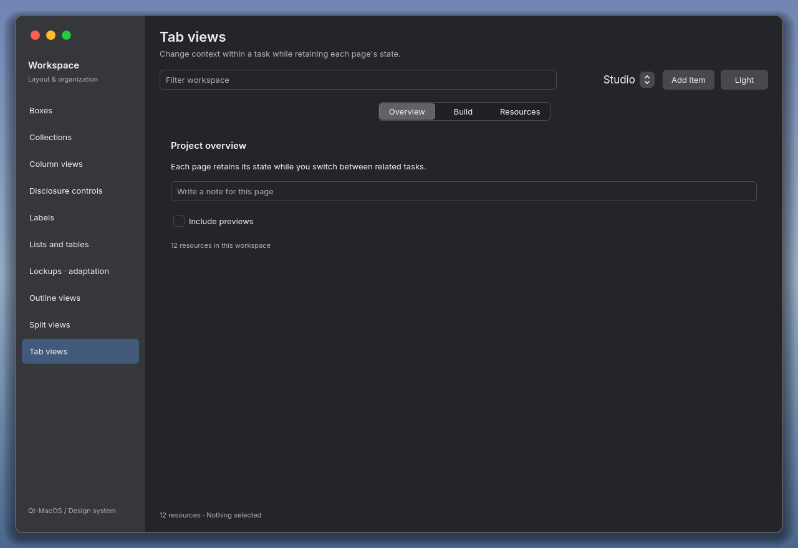
1280 × 880 · 66,070 bytes
Exit: 0 · process: 0.7029 s
Command
/workspace/Qt-MacOS/build/qtmacos-gallery --layout --presentation --page tabs --dataset studio --state default --dark --screenshot /workspace/Qt-MacOS/docs/screenshots/layout/20261108T074438Z-yxe0jxah/tabs-dark-default.png
tabs · light-active
1280 × 880 · 65,999 bytes
Exit: 0 · process: 0.697 s
Command
/workspace/Qt-MacOS/build/qtmacos-gallery --layout --presentation --page tabs --dataset studio --state active --screenshot /workspace/Qt-MacOS/docs/screenshots/layout/20261108T074438Z-yxe0jxah/tabs-light-active.png
tabs · narrow-library
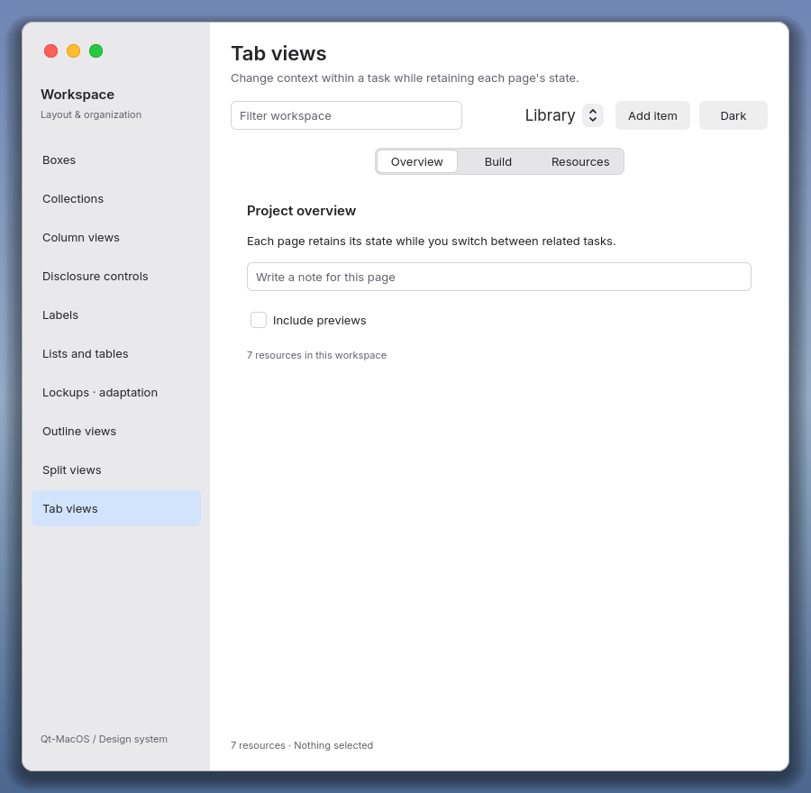
900 × 880 · 63,253 bytes
Exit: 0 · process: 0.689 s
Command
/workspace/Qt-MacOS/build/qtmacos-gallery --layout --presentation --page tabs --dataset library --state default --narrow --screenshot /workspace/Qt-MacOS/docs/screenshots/layout/20261108T074438Z-yxe0jxah/tabs-narrow-library.png